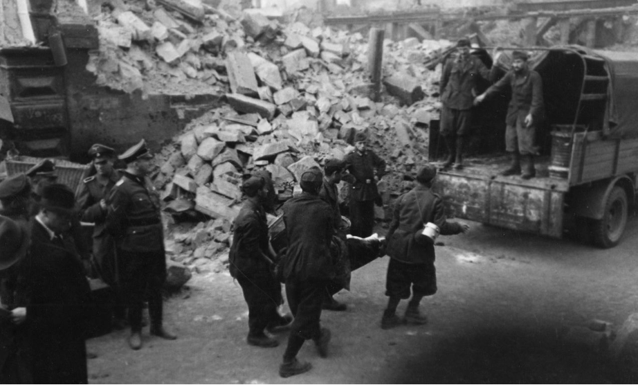

IMI al lavoro dopo il bombardamento
Data: 1943
Luogo: Kassel, Germania
Fonte: ns-zwangsarbeit.de
Descrizione: Fotografia che documenta il lavoro degli Internati Militari Italiani (IMI) durante il recupero delle salme dopo il bombardamento su Kassel, Germania, nel 1943.
Tipologia: Fotografia storica
Formato: Digitale (.jpg)